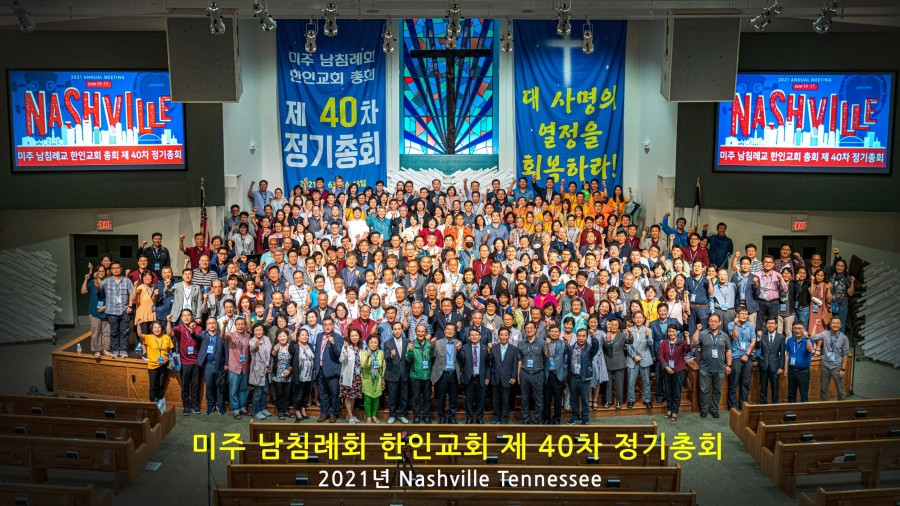

CKSBCA 온라인 기도실
히스기야의 기도
온라인 기도실 안내
온라인 기도실은 하나님께 나아가는 자리입니다.
30분 정도 여유를 갖고 하시길 바랍니다.
말씀과 묵상, 찬양과 기도로 함께 합니다.
배경 음악이 나올 수 있습니다. 볼륨을 조절하시기 바랍니다.
준비가 되셨으면, 아래의 버튼을 눌러주세요.
찬양, 마음을 열며
먼저 찬양의 가사를 천천히 읽어 봅시다.
샬롬
내니 두려워말아라
나의 아들 나의 딸아
안심하라
샬롬
나의 평안을 주노라
세상과는 다른 평안
두려워 마라
내니 두려워 말아라
나의 사랑 나의 이스라엘
안심하라
평강 있을지어다
아버지께서 날 보냄 같이
나도 널 보내노라 샬롬
- 내니 두려워 말아라 (노래 김상진)
말씀, 우리의 시선을 두고
첫번째 말씀은 앗수르에 항복하라는 편지를 받고 히스기야가 드린 기도입니다.
음악이 나옵니다. 볼륨을 조절하시기 바랍니다.
히스기야가 사자의 손에서 편지를 받아보고 여호와의 성전에 올라가서 히스기야가 그 편지를 여호와 앞에 펴 놓고
그 앞에서 히스기야가 기도하여 이르되 그룹들 위에 계신 이스라엘의 하나님 여호와여 주는 천하 만국에 홀로 하나님이시라 주께서 천지를 만드셨나이다라
- 열왕기하 19:14-15
말씀, 우리의 시선을 두고
두번째 말씀은 기도 후, 히스기야가 백성에게 전하는 말입니다.
너희는 마음을 강하게 하며 담대히 하고 앗수르 왕과 그를 따르는 온 무리로 말미암아 두려워하지 말며 놀라지 말라 우리와 함께 하시는 이가 그와 함께 하는 자보다 크니
그와 함께 하는 자는 육신의 팔이요 우리와 함께 하시는 이는 우리의 하나님 여호와시라 반드시 우리를 도우시고 우리를 대신하여 싸우시리라 하매
백성이 유다 왕 히스기야의 말로 말미암아
안심하니라
- 역대하32:7-8
하나님, 천하만국에 홀로
말씀을 새기며 기도합시다.
히스기야는 주님께 올려드릴 수많은 어려운 사정이 있으나, 찬양으로 기도를 시작합니다.
천하만국의 홀로 하나님, 그의 찬양은 미사여구가 아니라 신앙고백이었습니다.
우리에게 주님은 어떤 분인지 고백합시다. 그 분의 성품을 하나 하나 기억해 내고 찬양의 기도를 올립시다.
여호와 앞에, 그 편지를 펴 놓고
우리의 구체적인 문제를 하나님께 올려드립시다.
우리 인생을 에워싸고 있는 환경과 해결할 수 없는 삶의 문제들이 있습니다.
우리의 찬양을 받으신 주님께 우리의 환경과 문제들을 펼쳐 놓으며 기도합시다.
"앗수르를 물리치신 천하만국의 하나님, 오늘 우리 인생의 문제 가운데 역사하여 주옵소서"
교회, 가족, 건강, 경제, 관계 등
반드시, 우리를 도우시고(대하 32:8)
목양하시는 교회를 위해 기도합시다.
예배의 자리마다 은혜를 허락하여 주시길 구합시다.
감사의 계절에 감사가 넘쳐나길 기도합시다.
주님께서 반드시 도우셔야만 하는 이들이 있습니다. 연약한 지체들 위해 중보합시다.
환자, 출산, 진로 및 취업, 경제적 어려움, 결혼, 태의 열매, 안전 등
성전에, 올라가서
우리 총회에 속한 교회들을 위해 기도합시다.
가장 절박한 자들의 피난처가 되며, 환대하는 교회가 되게 하소서
절박한 상황 속에 히스기야는 성전에 올라갔습니다. 그러나 갈 곳조차 없는 이들이 있습니다.
팬데믹 상황으로 교회를 향한 발걸음이 뜸해진 자들이 있습니다. 이전에도 누군가에게는 막혀있었습니다.
성전예배가 회복되기를 기도합시다. 이 시대에 버려진 자들이 교회를 향한 발걸음을 옳겨 놓도록 기도합시다.
백성이, 그의 말로 안심하다
나라를 위해 기도합시다.
이 땅 가운데 은혜를 베풀어 주시길 기도합시다.
포위된 상황은 바뀌지 않았으나 기도를 마친 히스기야의 말에 백성들은 안심합니다.
여러 소식들이 마음을 무겁게 합니다. 그러나 기도하는 이들이 있습니다.
주께서 이 나라와 백성들에게 힘을 더하여 주시고, 안심케 하시길 기도합시다.
코로나, 경제, 고통받는 이들, 위정자
기도문, 미즈노 겐조
믿음의 사람들의 기도문으로 함께 기도합시다. 아래 기도문을 소리내어 읽읍시다.
기도문을 통해 기도의 언어가 확장되길 소망합니다.
하나님
오늘도 말씀해 주세요
단 한마디 뿐이어도 좋습니다.
단 한 마디 뿐이어도 좋습니다.
내 마음은 작아서
많이 주셔도 넘쳐 버려 아까우니까요.
-미즈노 겐조, 말씀
미즈노 겐조(1937-1984)는 일본의 기독교 시인입니다. 초등학교 4학년때 뇌성마비를 앓게 되어 눈만 깜빡일 수 밖에 없었으나, 미야오 목사의 전도를 통해 그리스도를 영접하였습니다.
그가 할 수 있는 것은 눈만 깜빡이는 것뿐이었습니다. 그의 어머니의 노력으로 눈을 깜빡여 소통을 하게 되었고, 4권의 시집을 출간하였습니다.
기다림, 주님의 뜻을 기다리며
주님이 우리에게 주시는 마음이 있는지 살펴봅시다.
억지로 생각을 짜내지 않고, 침묵합니다.
모든 생각이 주님의 것은 아닙니다. 떠오른 것 중에는 내 생각와 욕구, 할 일도 있습니다. 자연스러운 과정이니 괜찮습니다. 침묵에 머물러 주십시오.
말씀하옵소서. 주의 종이 듣겠나이다
사무엘상 3장 10절
고요한 가운데 잠시 침묵하시기 바랍니다.
한 줄 기도문, 마음과 생각을 분별하며
기도 가운데 떠올린 생각이나 마음, 감사 제목이나 새롭게 드린 기도를 한 줄로 기록합니다.
감사, 간구를 들으신 주님께
오늘 기도를 인도하신 주님께 감사를 올려드립니다.
주님께서 히스기야를 도우신 것처럼 우리를 도우십니다.
아래의 구절을 읽고, 감사의 제목을 올려드립니다.
우리를 비천한 가운데에서도 기억해 주신 이에게 감사하라
그 인자하심이 영원함이로다
시편 136편 23절
파송, 세상을 향하여
오늘의 온라인 기도는 마쳤습니다.
주께서 우리를 위하시고 함께 하십니다.
주님과 함께 세상으로 나아가시기 바랍니다.
한 걸음 내딛으며